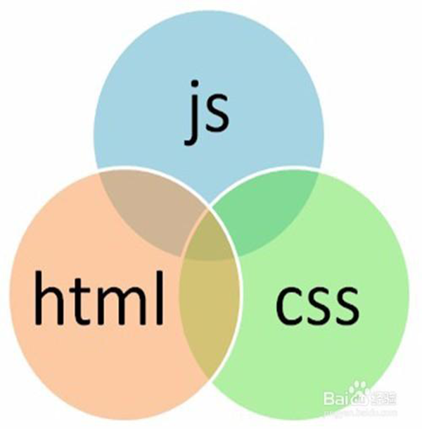

任建帅
出生日期：1994年02月07日
学历：本科
工作经验：2年
联系方式：13759986952
邮箱：renjs1227@163.com
自我评价
- 1、为人踏实乐观，工作认真、责任感强、人际交往、沟通能力良好、表达能力强；
- 2、思维敏锐活跃，具有良好的审美，创新能力，视觉表达能力；
- 3、热情、随和、积极主动、充满正能量、忠于自己的信念，在工作中重视服从领导的计划安排，恪尽职守；
- 4、具有较强的抗压能力和对新环境适应能力，能快速接手新工作；
- 5、学习能力强，思路清晰，善于从整体上分析、对细节难题具备快速钻研解决能力；
- 6、有实际项目设计经验、有较强的团队合作精神；
